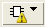

PERC Toolbar
Figure 1 shows the toolbar as seen for a Calibre PERC LDL results database.
Item |
Description |
|---|---|
Highlighting Color Scheme |
Selects the color scheme for highlighting connectivity objects such as nets, devices, and ports. See “Setting Highlight Color in Calibre RVE for LVS, PERC, and PEX”. |
Setup Highlight Filters |
Available only for layout-based Calibre PERC and Calibre PERC LDL results. Opens the Highlights Tab for specifying layer, device, and area filters for highlight actions. The icon is blue when a highlight filter is active and gray when no filter is active. |
 |
Available only when viewing extraction results produced as part of a Calibre PERC run. Selects the grouping method for the tree view in the Extraction Results tab; see “LVS Toolbar”. |